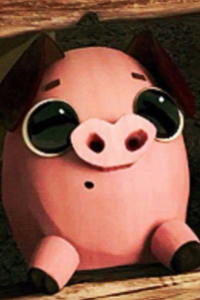

Personagens
- Nome: Manolo Sánchez
- História: Manolo é filho do melhor toureiro de San Angel. Ele vivia com seu pai e sua bisavó. Sua mãe morreu quando ele era mais novo. Desde pequeno, Manolo tem uma paixão por música, porém, seu pai não concordava. Ele sempre ouvia: "A música não combina com um toureiro da família Sánchez!". Mesmo assim, ele nunca desistiu disso. Ele teve uma paixão por Maria desde o começo e faria de tudo para salvá-la de qualquer perigo.
- Sua versão criança:
- Nome: Maria Posada
- História: Maria é a filha da maior autoridade da cidade de San Angel. Desde pequena, seus melhores amigos foram Manolo Sánchez e Joaquim Mondragón. Quando criança, foi levada para o Convento da Chama Perpétua da Pureza, na Espanha, para virar uma bela dama pois, de acordo com seu pai, ela não estava tendo boas maneiras. No dia de sua partida, Manolo deu para ela um porquinho, para ela nunca esquecer de sua cidade, seu nome era Chuy.
- Maria em sua versão criança:

- Nome: Chuy
- História: É o adorável e engraçado porco de Maria, que ganhou de Manolo antes de partir para a Espanha.
- Nome: Joaquim Mondragón
- História: Joaquim é filho do maior herói de San Angel. Como seu pai morreu, ele viveu sozinho. Seus amigos, Maria e Manolo, sempre se encontravam para realizar aventuras e brincadeiras. Quando Maria foi embora, ela pediu para ele lutar pelo certo. Igual Manolo, Joaquin foi alvo de uma aposta, recebendo a benção de Xibalba: a Medalha da Imortalidade. Com ela, Joaquim fica invencível.
- Sua versão criança:
- Nome: La Muerte
- História: Ela é a deusa da Morte e governa o Reino dos Lembrados, um dos dois reinos que são parte do mundo dos mortos no filme. É uma personagem que valoriza as memórias e as celebrações da vida e da morte, e seu reino é um lugar alegre e colorido, onde as almas são celebradas e lembradas com carinho. Ela se preocupa profundamente com o bem-estar das almas e deseja que todas as pessoas sejam lembradas com amor e alegria. La Muerte tem o poder de se disfarçar.

- Nome: Xibalba
- História: É o deus do submundo, governando o Reino dos Esquecidos. Ele é um personagem complexo e antagonista, conhecido por sua natureza manipuladora e astuta. Xibalba é movido por um desejo de poder e reconhecimento. Ele quer provar que é superior a La Muerte e demonstrar seu domínio sobre o destino das pessoas. Seu principal objetivo é aumentar sua influência e controle, muitas vezes por meio de truques e manipulações. Ele também busca superar La Muerte em uma competição que envolve a vida e a morte. Igual sua companheira, ele também pode se desfarçar.
- Nome: Homem de Cera
- História: O Homem de Cera é um boneco de cera que tem uma aparência muito semelhante a um guerreiro de cera. Ele tem a função de ser uma espécie de guia ou facilitador, que ajuda a explicar aspectos da história e dos personagens para o público e oferece informações sobre o funcionamento do mundo dos mortos. Sua presença serve para adicionar humor e leveza à trama, especialmente em momentos em que o filme explora temas mais profundos.
- Nome: Chakal
- História: Ele é um temido bandido e líder de um grupo de foras da lei que aterroriza a cidade de San Ángel. Chakal é retratado como um guerreiro gigantesco e brutal, conhecido por sua força imensa e por seu comportamento intimidador. Seu objetivo é invadir San Angel e recuperar a Medalha da Vida Eterna, que Xibalba tirou para entregar ao Joaquim.
- Nome: General Posada
- História: Ele é um homem rigoroso e protetor, desejando o melhor para sua filha. O General Posada é um líder respeitado na cidade de San Ángel e espera que María se case com Joaquín, um herói local, pois acredita que ele seria o marido ideal para garantir segurança e estabilidade para sua filha e a cidade.

- Nome: Carmen Sánchez
- História: Mãe de Manolo, morreu antes dos acontecimentos do filme. O que sabemos sobre ela é que amava cantar quando viva. Ela aparece quando Manolo vai para a terra dos lembrados.

- Nome: Carlos Sánches
- História: Pai de Manolo, é imponente e tradicional, que valoriza profundamente o legado familiar. Ele sente orgulho de sua herança e quer que Manolo continue a tradição, mas muitas vezes entra em conflito com o filho, que tem uma paixão maior pela música do que pela arena de touros.
- Sua versão esqueleto:
É claro que existe mais personagens. Só que para descobrirem, vocês terão que assistir.
E para quem já assisitu, é sempre bom assistir novamente.
Clique aqui para voltar para a página inicial.